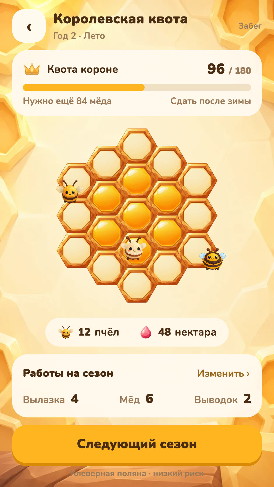

Те же соты, фон и пчёлы. Без мастерских, домиков, подробного окружения и повторяющихся панелей. Работы меняются отдельно; здесь остаётся только краткое распределение.
Библиотека · Прошлые варианты — черновики · Макет в размере телефона
